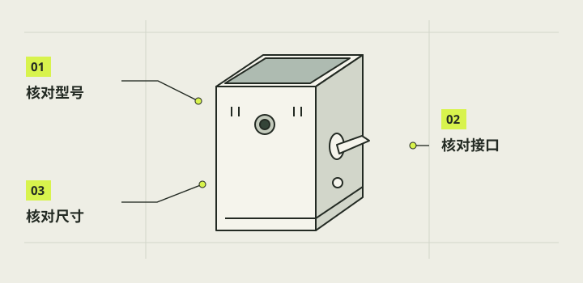

购买清单与兼容性核对
购买前先按功能和接口列清单，而不是照一张商品图把所有零件买齐。本项目已有 Pi3B+、IMX219 相机、Waveshare DSI 屏、线材、拉杆、按钮和一只内置电池样品；公开读者可以参照规格逐项核对自己的版本。价格、现货和卖家叫法会变，教程只给数量、关键规格和验收问题。

本章完成目标
- 得到一份不重复购买的清单
- 为每项记录接口、尺寸和版本
- 把未验证规格转成到货检查
开始前准备好
- 已完成零件识别与系统关系图
- 先清点手上已有部件
- 可以取得卖家对应 SKU 的尺寸和接口资料
购买前，按这张表逐件核对。
数量是本项目一台样机的起点。已有零件先勾掉，替换型号重新核接口、尺寸、供电和软件。价格随渠道变化，本表不填未核实报价。
| 部件 | 数量与本项目例子 | 购买／收货前核对 |
|---|---|---|
| 主控板 | 1 块 · Raspberry Pi 3B+ | 板型、接口位置、供电要求；其他板型重新适配结构与系统 |
| 摄像头模组 | 1 套 · Camera Module 2 / IMX219 | 实际模组型号、安装孔、镜头朝向与排线 |
| 触摸屏 | 1 块 · Waveshare 4.3-DSI-TOUCH-A | 480×800、DSI 接口、硬件版本及独立供电接法 |
| 屏幕与相机排线 | 各 1 根 · 本项目适配 Pi3B+ 的 15 针连接 | 两种排线分别核对，确认长度、针数、间距和接触面方向 |
| 系统卡与读卡器 | 系统卡 1 张；电脑读卡器按需 | 容量满足所选镜像，目标卡可清空，现有照片卡另留 |
| 基础供电 | 1 路匹配电源＋Micro USB 供电线 | Pi3B+ 官方输入规格 5V/2.5A；线材与插头匹配 |
| 内置电池样品 | 1 套 · Micro 款，产品标称 5V/2500mAh/3A | 实际输出、尺寸、出线方向、低负载保持与充电切换；标称不等于实测 |
| 快门拉杆 | 1 个 · 自复位三脚开关 | 核触点、螺纹、壳内深度、安装方向和回弹 |
| 电源按钮 | 1 个 · 自复位常开，另带白灯 | NO 与 LED 分脚，核开孔、总长和自身螺母 |
| 白灯限流电阻线 | 1 条 · 约 1kΩ 独立串联转接线 | 脱离设备测阻，确认串联、绝缘和连接稳固 |
| 信号线与绝缘件 | 按第10章线路和实际线长配 | 2.54mm 接头公母、热缩管、应力释放及开盖余量 |
| 散热片与固定材料 | 按实际处理器与净空选配 | 平底尺寸、胶层类型、可靠固定；不压碰邻近元件 |
| 打印件 | 按选定版本的零件清单配套 | B/C 外柄二选一，替换件按版本成套；不把所有对象都装进一台机 |
| 测量与工作台工具 | 万用表、测量尺等按已有库存配 | 用于断电通断、尺寸和相应电气核对；不重复买现有工具 |
- SKU
- 商家某个具体规格选项，颜色、端子或尺寸变化可能就是不同 SKU。
- 兼容性
- 接口、电气、空间和软件都满足当前配置，而非仅能插进去。
列核心器件
样机基线为 Pi 3B+ 一块、Camera Module 2/IMX219 一套、4.3-DSI-TOUCH-A 触屏一块、适合 Pi3B+ 的 15 针 DSI 排线和相机排线各一根、可用的 Micro USB 供电线与系统卡。先逐件勾掉已有库存，核具体接口和排线方向。若换 Pi 5、其他屏幕或其他相机，重新检查排线、驱动和系统教程。
注意 / 本章不承诺不同主板可直接使用 本样机的 GPIO 或软件版本。
核控件与线束
首台只需要一个自复位三脚快门拉杆和一个自复位常开电源按钮；本项目按钮另带独立白灯。核拉杆的实际动作方向、安装螺纹、触点端子与壳内深度，核按钮开孔、总长、NO 与 LED 分脚。准备合适的 2.54mm 信号转接、绝缘和应力释放材料，数量按真实线长加维护余量，不照历史两组试验件翻倍购买。
注意 / 高电压或数安培触点额定值不能证明 3.3V 微小电流信号可靠。
核供电样品
本项目已购的 Micro 款电池包宣称 5V、2500mAh、3A、可边充边用；它是待验证样品，采购时需核输出端是否持续给出合适的 5V、接口是否真能接 Pi PWR IN、充电输入要求和实物尺寸。Pi3B+ 官方输入规格是 5V/2.5A。标称容量不能直接推出续航，边充边用不能直接推出拔插充电线无瞬断。
注意 / 不要把裸锂电芯、充电口或面包板当成可直接替代的 Pi 电源。
按需选择测量和散热件
库存里已有杜邦跳线、面包板、电阻等测试件，先清点再补。万用表用于断电通断和输出电压检查；电工胶带已购，热缩管与开关端接头按真实焊点决定。散热片的平底尺寸、导热胶类型与装壳高度须先确认；只有未自带可靠胶层时才另配适用的导热双面胶。不要为了照片中的第二块散热片预设第二个安装位。
注意 / 普通绝缘胶带不能代替导热胶固定金属散热片。
做收货兼容性表
把清单分成已有、待到货、需补购三列，给每件加“型号/接口/尺寸/电气/软件”五项核对格。到货先拍标识和接口，再在断电状态量尺寸与触点；随后按第 05 章只连接基础三件。若规格与下单页不同，停下修改清单与装配图，不用削壳或强压排线补救。
注意 / 商品价格与库存变化快，本教程不填未经当期核验的报价。
完成后，逐项打勾。
勾选帮助你记录进度，不代表项目替你完成了实机验收。
遇到问题，从这里排查。
商品标题相同但接口图不同
索取对应 SKU 的实物背面与尺寸图，按端子和排线规格判断，暂不下单替代件。
新电池标 3A 却启动不稳定
核实际输出与线材压降、负载和欠压记录；不只凭标签换更大容量。
本项目的实际进展
- D 的 2026-10-16 清点确认拉杆、带灯按钮和电池已经购买；后续实测覆盖了部分当时待办。
- 电池商品初核里 47×17×40 mm 为卖家标称；后续结构审查实物约 48×42×18 mm，做结构时必须复量当前实体。
资料与核对依据
- 器材库存 · camera-reference/inventory/inventory.md
- D 到货前库存核对 · camera-project/D-控件供电/test-prep/20261016-inventory-check.md
- D 控件采购核对 · camera-project/D-控件供电/purchase-review/20261016-controls-v1/README.md
- D 电池样品初核 · camera-project/D-控件供电/power-review/20261016-battery-v1/README.md
- Pi3B+ 官方产品页 ↗
资料核对日期：2026-10-30。不同硬件、系统版本和材料需要重新验证。